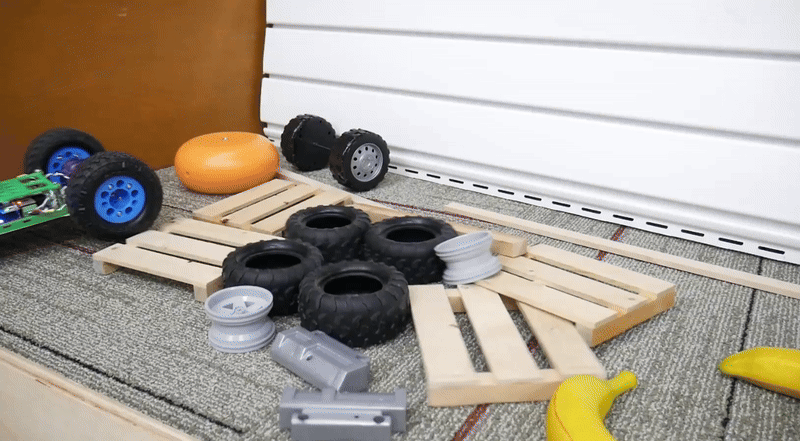
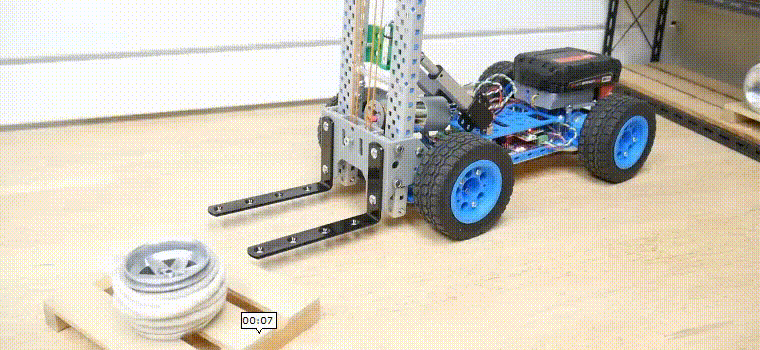

4x4 Rover Project
About
The 4x4 Rover Project is a skid-steer rover platform built primarily from 3D-printed brackets, 12V motors, and a custom printed circuit board (PCB) featuring an ESP32. Most components are either off-the-shelf or open source. This project serves as an introduction to creating your own robotics platform through a hands-on engagement with DIY hardware. Since robotics is firmly rooted in mechatronics, a project you can physically build and modify using the provided source files is arguably the best way to grasp the fundamentals. This project is an intermediate-skill build, designed as an intimate and purposeful introduction to hardware for building foundational knowledge.

Resources
The 4x4 rover platform reference CAD files are located here.

Learning activity worksheet for principles of H-bridges and skid steer planning.
📐CAD Files for the complete project are located here. You can export or make a copy and edit with a free onshape account.
🔋PCB design files are located here.
To expand the rover platform object beyond a 4x4 rover, a forklift mechanism was designed.
